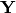
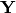
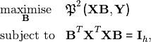
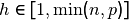
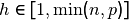

sudire¶
Sufficient dimension reduction (SDR) is a recent take on dimension reduction, where one aims to estimate a set of latent variables
that are linear combinations of the original variables  in such a way that the subspace spanned by them contains all information
relevant to the dependent variable in such a way that the subspace spanned by them contains all information relevant to the dependent variable:
in such a way that the subspace spanned by them contains all information
relevant to the dependent variable in such a way that the subspace spanned by them contains all information relevant to the dependent variable:
 Here,
Here,  is a sample of
is a sample of  cases of a
cases of a  variate random variable and 
is a sample of the dependent variable,
variate random variable and 
is a sample of the dependent variable,  is a
is a  matrix with
matrix with  , and
, and  denotes statistical independence.
A lot of research has been done over the last thirty years investigating different approaches in
terms of asymptotics and assumptions made in each of the approaches. A good textbook
providing an overview of approaches to SDR is Li (2018). The subpackage sudire contains
implementations of a broad set of these approaches.
denotes statistical independence.
A lot of research has been done over the last thirty years investigating different approaches in
terms of asymptotics and assumptions made in each of the approaches. A good textbook
providing an overview of approaches to SDR is Li (2018). The subpackage sudire contains
implementations of a broad set of these approaches.
Generally speaking, SDR techniques roughly resort in three categories. At first, there is a successful set of approaches to SDR based on slicing the original space. Examples of these are sliced inverse regression (SIR, Li (1991)) and sliced-average variance estimation (SAVE, Cook (2000)). A second group of developments has involved selective focus on certain directions, which has resulted in, among others, directional regression (DR, Li (2007)), principal Hessian directions (PHD, Li (1992)) and the iterative Hessian transformations (IHT, Cook and Li (2002)).
While all of the aforementioned methods are included in sudire and would merit a broader discussion, at this point we would like to highlight that sudire contains implementations of a more recent approach as well. The latter has, so far, resulted in three methods, all three of which share the following advantages: they do not require conditions of linearity or constant covariance, nor do they need distributional assumptions, yet they may be computationally more demanding. This third group of SDR algorithms estimates a basis of the central subspace as:

where  is an arbitrary
is an arbitrary  matrix, . Here,
matrix, . Here,  can be any statistic, that estimate a subspace whose complement
is independent of . Currently implemented statistics are squared distance covariance, squared martingale difference divergence, and squared ball covariance.
can be any statistic, that estimate a subspace whose complement
is independent of . Currently implemented statistics are squared distance covariance, squared martingale difference divergence, and squared ball covariance.
Usage¶
Created on Sat Apr 11 15:53:12 2020
@author: Emmanuel Jordy Menvouta
-
class
direpack.sudire.sudire.sudire(sudiremeth='bcov-sdr', n_components=2, trimming=0, optimizer_options={'max_iter': 1000}, optimizer_constraints=None, optimizer_arguments=None, optimizer_start=None, center_data=True, center='mean', scale_data=True, whiten_data=False, compression=False, n_slices=6, dmetric='euclidean', fit_ols=True, copy=True, verbose=True, return_scaling_object=True)[source]¶ SUDIRE Sufficient Dimension Reduction
The class allows for Sufficient Dimension Reduction using a vaiety of methods. If the method requires optimization of a function, This optimization is done through the Interior Point Optimizer (IPOPT) algorithm.
- Input parameters to class:
- sudiremeth: function or class. sudiremeth in this
package can also be used, but user defined functions can be processed. Built in options are : save : Sliced Average Variance Estimation sir : Slices Inverse Regression dr : Directional Regression dcov-sdr : SDR via Distance Covariance mdd-sdr : SDR via Martingale Difference Divergence.
n_components: int, dimension of the central subspace.
trimming: float, trimming percentage to be entered as pct/100
- optimizer_options: dict with options to pass on to the optimizer.Includes:
max_iter: int. Maximal number of iterations. tol: int. relative convergence tolerance constr_viol_tol : Desired threshold for the constraint violation.
- optimizer_constraints: dict or list of dicts, further constraints to be
passed on to the optimizer function.
optimizer_arguments: dict, extra arguments to be passed to the sudiremeth function furing optimization.
optimizer_start : numpy array, starting value for the optimization.
- center: str, how to center the data. options accepted are options from
sprm.preprocessing
center_data: bool
- scale_data: bool. Note: if set to False, convergence to correct optimum
is not a given. Will throw a warning.
compression: bool. Use internal data compresion step for flat data.
n_slices, int: The number of slices for SAVE, SIR, DR
is_distance_mat, bool : if the inputed matrices for x and y are distance matrices.
dmetric, str: distance metric used internally. Defaults to ‘euclidean’
fit_ols, bool : if True, an OLS model is fitted after the dimension reduction.
copy: bool. Whether to make a deep copy of the input data or not.
verbose: bool. Set to True prints the iteration number.
return_scaling_object: bool.
The ‘fit’ function will take a set of optional input arguments.
-
fit(X, y, *args, **kwargs)[source]¶ Fit a Sufficient Dimension Reduction Model.
- Required input argument :
X: data as matrix or data frame y: data as vector or 1D matrix
arg or kwarg:
Further parameters to user defined sufdiremeth can be passed here
-
get_params(deep=True)¶ Get parameters for this estimator.
- Parameters
deep (boolean, optional) – If True, will return the parameters for this estimator and contained subobjects that are estimators.
- Returns
params – Parameter names mapped to their values.
- Return type
mapping of string to any
-
direpack.sudire.sudire.estimate_structural_dim(sufdirmeth, Xn, y, B, *args, **kwargs)[source]¶ ” estimates the dimension of the central subspace using the sufirmeth.
- input arguments:
sufdirmeth : the SDR method to use in the estimation. X : Input X data as a numpy array or dataframe Y : Input Y data as vector or 1d matrix B : Number of bootstrap replications kwargs:
n_slices : number of slices for SIR/SAVE/DR center_data, bool : if the data should be centered scale_data, bool : if the data should be scaled center, string : which centering(‘mean’, ‘median’)
Dependencies¶
From sklearn.base: BaseEstimator,`TransformerMixin`,`RegressorMixin`
From sklearn.utils: _BaseComposition
copy
From scipy.stats : trim_mean
From scipy.linalg: inv, sqrtm
cython
From ipopt : minimize_ipopt
numpy
From statsmodels.regression.linear_model: OLS
statsmodels.robust
References¶
Sufficient Dimension Reduction via Distance Covariance, Wenhui Sheng and Xiangrong Yin in: Journal of Computational and Graphical Statistics (2016), 25, issue 1, pages 91-104.
A martingale-difference-divergence-based estimation of central mean subspace, Yu Zhang, Jicai Liu, Yuesong Wu and Xiangzhong Fang, in: Statistics and Its Interface (2019), 12, number 3, pages 489-501.
Sliced Inverse Regression for Dimension Reduction, Li K-C, Journal of the American Statistical Association (1991), 86, 316-327.
Sliced Inverse Regression for Dimension Reduction: Comment, R.D. Cook, and Sanford Weisberg, Journal of the American Statistical Association (1991), 86, 328-332.
On directional regression for dimension reduction, B. Li and S.Wang, Journal of the American Statistical Association (2007), 102:997–1008.
On principal hessian directions for data visualization and dimension reduction:Another application of stein’s lemma, K.-C. Li. , Journal of the American Statistical Association(1992)., 87,1025–1039.
Dimension Reduction for Conditional Mean in Regression, R. D. Cook and B. Li., The Annals of Statistics(2002)30(2):455–474.
Robust Sufficient Dimension Reduction Via Ball Covariance Jia Zhang and Xin Chen, Computational Statistics and Data Analysis 140 (2019) 144–154
Sufficient Dimension Reduction: Methods and Applications with R, Li B (2018). Chapman& Hall /CRC, Monographs on Statistics and Applied Probability, New York